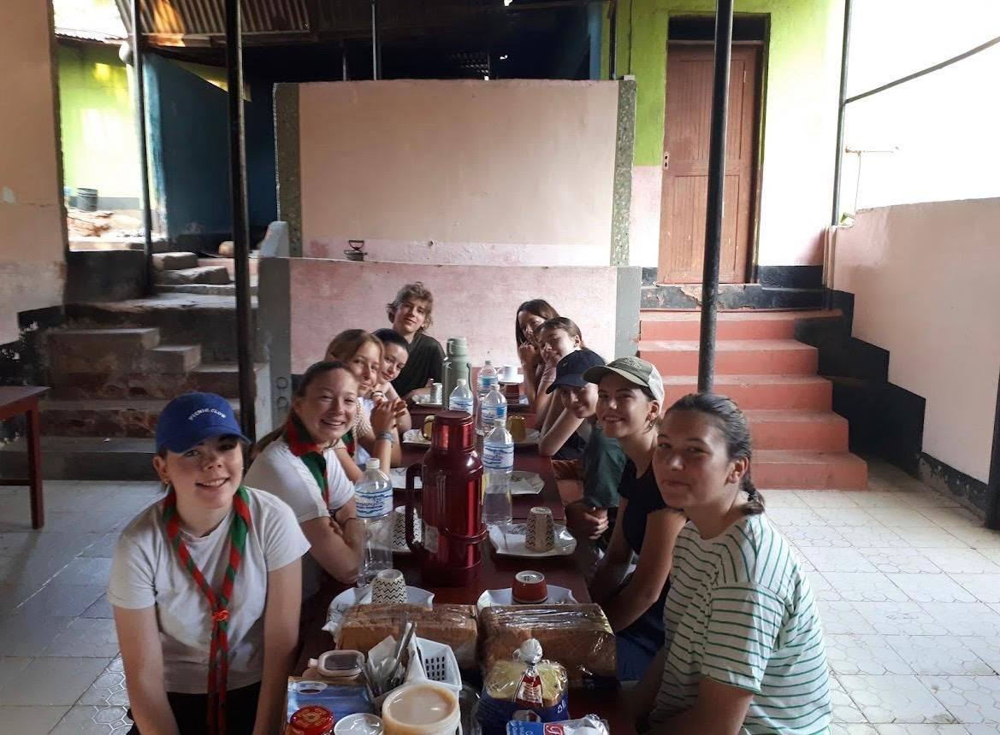
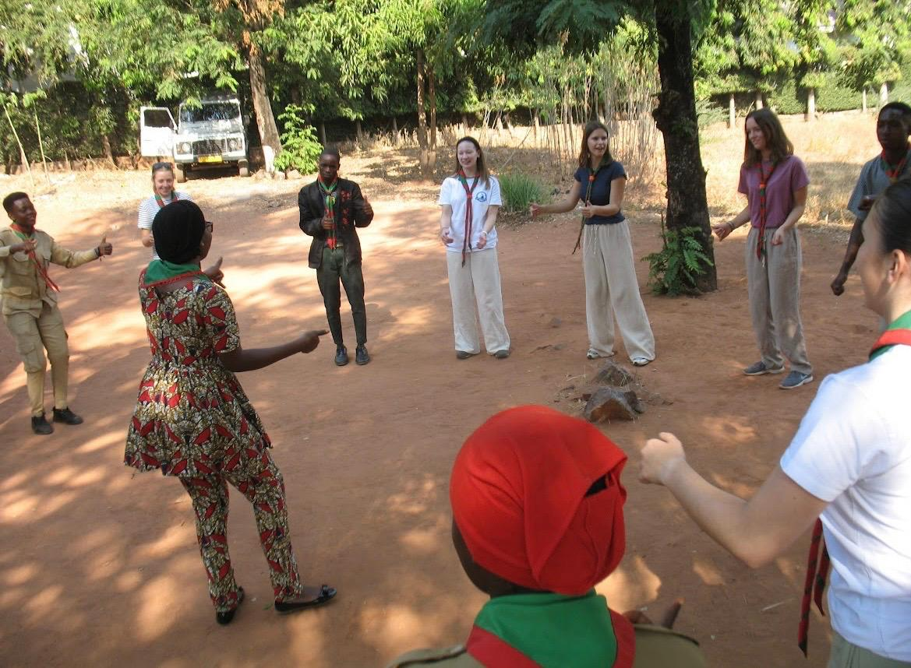
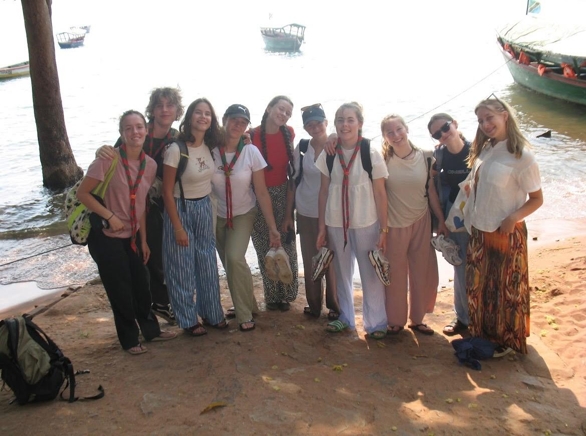

Ik ben twee weken naar Tanzania geweest, meer bepaald naar de stad Kigoma. Deze reis werd georganiseerd door Fracarita Belgium, een organisatie die deel uitmaakte van de Broeders van Liefde. Fracarita Belgium had verschillende projecten in Kigoma en Congo, waar ze zich inzetten om mensen te helpen die het hard nodig hadden. Tijdens mijn verblijf kreeg ik de kans om hun werking van dichtbij te zien en de lokale gemeenschap beter te leren kennen. Jammer genoeg bestaat Fracarita Belgium vandaag niet meer, maar de herinneringen aan deze bijzondere en leerrijke reis draag ik nog steeds mee.


Tijdens mijn reis van twee weken naar Tanzania ontdekte ik hoe anders het leven daar is in vergelijking met hier. De mensen in Kigoma leven op een eenvoudige manier en hechten veel belang aan gemeenschap en samenhorigheid. Het was heel uniek om dit van dichtbij te kunnen meemaken. Het doel van deze reis was om te leren hoe de lokale bevolking leeft en om te zien welk verschil Fracarita Belgium maakte in hun leven. Dankzij hun projecten kregen veel mensen de hulp en ondersteuning die ze nodig hadden. Deze ervaring heeft mijn kijk op de wereld verruimd en een blijvende indruk op mij nagelaten.
De groep waarmee ik naar Tanzania ging bestond uit 10 personen en was zorgvuldig samengesteld door de twee begeleiders, wat zorgde voor een fijne sfeer. In de loop van de weken werden we een hechte groep en leerden we elkaar steeds beter kennen. We deelden samen zowel mooie en vrolijke momenten als moeilijke en emotionele ervaringen, die onze band versterkten. Ook na de reis hielden we contact tijdens weekenden en evenementen. De tijd in Tanzania leverde niet alleen onvergetelijke herinneringen op, maar ook vriendschappen voor het leven.
